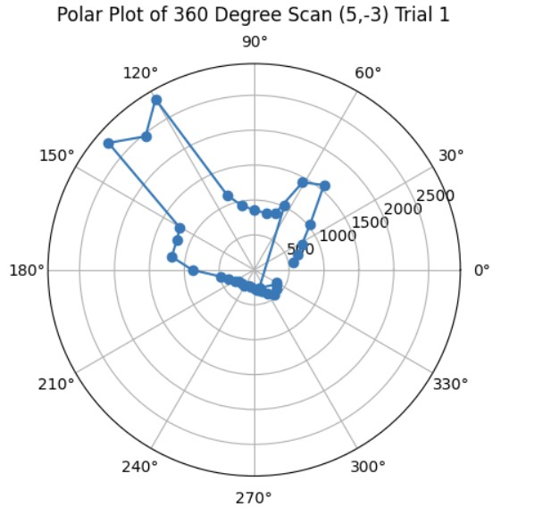
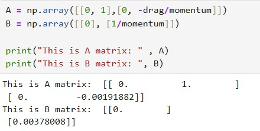
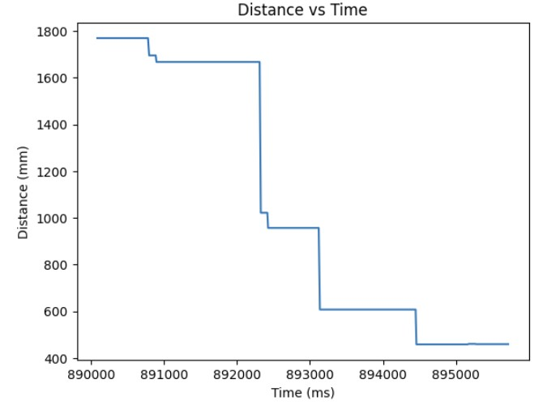

Becky Lee (bl478)
My name is Becky Lee and I am an ECE M.Eng student. I'm excited for this semester and exploring more about robotics. In my free time, I like to learn new cultures and languages.

My name is Becky Lee and I am an ECE M.Eng student. I'm excited for this semester and exploring more about robotics. In my free time, I like to learn new cultures and languages.

For part 1A of the lab, I installed the Arduino IDE and the associated libraries needed for the Sparkfun RedBoard Artemis Nano. I also had to update the CH340 driver in order for my laptop to recognize the board.
I ran the blink example code by going to Examples > 01.Basics > Blink which blinks the onboard LED on and off.
I ran the serial example code by going to Examples > Apollo3 > Example04_Serial which echos back any message sent to the serial monitor.
I measured the temperature using the analog read example by going to Examples > Apollo3 > Example2_analogRead. As I blew on it, the temperature went up slightly.
I tested the microphone on the board by running the following example code Example > PDM > Example1_MicrophoneOutput. As I whistled, the frequency increased from around 600 to over 1000.
For the final task, I modified the blink demo code so that when the microphone detected a C note, then the LED would blink. Because of the app that I was using to generate the C note, the frequency for the C note was registering between 1310 and 1320.
I needed to set up a virtual environment in Python.

I also installed the ArduinoBLE library in the Arduino IDE. Then, I got the MAC address of the Artemis board by running the ble_arduino code.

Then, the MAC address and UUID was changed in the connections.yaml file so that I could connect the Artemis to my computer.


On the Arduino side, the ble_arduino.ino file provides the MAC address for the Artemis board and advertises that this device is available to be connected. We then generate a specific uuid on the python side in order to create a unique identifier for our specific Artemis board. Using python, the computer will scan for available devices and search for my Artemis board that has a unqiue MAC address and UUID pair. Once connected, the Artemis and computer can exchange messages back and forth using Bluetooth.
(1) I edited the ECHO command on the Arduino side so when it receives a string from the computer, it can send back “Robot says ->” along with the original string.


(2) I created a new command called SEND_THREE_FLOATS on the Arduino side which parses the three floats sent by the computer. Then, it prints out the three floats in the serial monitor.


(3) On the Arduino side, for GET_TIME_MILLIS, I used the currentMillis variable to get the current time in milliseconds by calling the millis() function. Then on the python side, the current time was sent back to the computer.


(4) I created a notification handler that takes the response string from the Artemis and parses the message, so it retrieves just the time.

(5) I created a command called GET_DATA which collects and sends data for 10 seconds. The notification handler is used to extract the time from the message. The effective data transfer rate is 242 messages/10 secs = 24.2 messages/sec.

(6) For SEND_TIME_DATA, I first collected the data for 10 seconds into an array of length 700. Once either the time reached 10 seconds or the array was filled, then we would send each data in the array to the computer.

(7) For GET_TEMP_READINGS, I used the same structure of collecting the time and temperature for 10 seconds into arrays of length 700. Then, I would send out the data once the arrays had been filled or we reached 10 seconds. I also created a notification handler on the python side which would separate the time and temperature and put it into time and temp arrays respectively.


(8) The first method where you send live data allows you to get the data almost instantaneously since you send the data right after you have received the measurement. This method can be useful when you want to make quick decisions based on real time data. The second method where you send data after it has been collected in an array allows you to record the data at a much faster rate since there are no interrupts from the computer or the BLE service. The second method is useful when you want to send data after you have completed a trial or a test. I am sending floats to represent the time and the temperature. Each float is 4 bytes. In turn, if we have 384kB of RAM, we can store 384kB/8 bytes which is 48,000 data points.
I tested the data rate by first sending a string called “Hello”. Then, I created a function similar to ECHO called ECHO_BYTES_BACK. Then I created a loop that increments the message being sent by 5 bytes each time. I would calculate the difference between when the message was sent and when the response message was received. In a separate loop, I calculated the byte length and data rate and then generated a graph shown below.


The data rate for 5-byte replies is around 20 bytes/second while 120-byte replies is about 500 bytes/second. Short replies introduce a lot of overhead because you need to send multiple packets to transmit a large amount of data. Each message contains a certain amount of overhead. As a result, since you need to send more packets, there will be a greater total amount of overhead as compared to larger packets. Larger replies help to reduce overhead because you can use fewer packets to send over a large amount of data. Because each message contains a large amount of data, the overhead is small as compared to the size of the actual data you want to send.
When you send data at a higher rate from the robot to the computer, the computer is able to read all of the data published. I tested this by sending over an array that had 1000 entries containing the time in milliseconds from the Artemis to the computer and the computer was able to receive all 1000 entries. The caveat is that since the data points were floats, there may have been a smaller overhead resulting in less data being transmitted overall.
I learned about the onboard Artemis board sensors and how Bluetooth can be used to transmit data between Artemis and the computer. It was also interesting to see how the data rate could increase or decrease depending on whether there were print statements in both the Arduino and Python code.
In this lab, the objective is to create a map of the room by slowly rotating the robot on its' axis and taking ToF measurements.
In order to turn the robot slowly so it goes 360 degrees, I opted to use my orientation PID control from lab 6 with a slight modification. I used a for loop to change my target angle by incrementing the current target angle by some fixed increment value (in my case 10 degrees). After either the robot gets to the target angle or the orientation PID times out, then the robot stops. The time, current angle, target angle, and one distance measurement from the ToF sensor is recorded. Then, the loop starts again and we increment the target angle by the increment value until we reach 360 degrees. I used a while loop to ensure that I collect 36 ToF distance measurements for each 360 degree rotation. Also, I added a delay at the beginning in order to try to resolve the issue of my DMP angle measurements not being stable when I first start my orientation PID controller.
Since the DMP has a range of -180 to 180 degrees, I had to map -180 to 180 degrees into 0 to 360 degrees. In my case, since there is still some bias in the DMP angle measurement, instead of adding 360 degrees when the yaw angle is less than 0, I added 360 when the yaw angle is less than -2 degrees.
I tried testing my mapping code in a small room where to the left and right of the robot, there was empty space/a hall and in the front of the robot, there was a cabinet. The first thing I did was do a ow 360 degree turn and take distance measurements every 10 degrees. Then, I converted my yaw angle measurements from degrees to radians so that I could make a polar plot that plotted the distance measurements at that particular angle. Below are the graphs showing my orientation PID working since the target angle and current angle that the robot is at is fairly close and my polar plot. Under the graphs, I have also provided the code to make the polar plot.
Angle vs Time Graph
At the beginning, the robot still needs time for the DMP measurements to stabilize so it does not reach the target angle that well. After about 4 or 5 trials, then the robots gets to the target angle fairly well.
Distance vs Time Graph
Polar Plot
Python Code for Polar Plot
I referenced Daria Kot's page and lecture 2 slides in order to make my transformation matrices code. First, I calculated the rotation matrix when rotating around the z axis. Then, I calculated the distance matrix by using my ToF distance measurement and adding to that the offset that my ToF is to the center of my robot. In my case, my ToF sensor is 76 mm offset from the x axis and 7.62 mm offset from the y axis. Then, I calculated the position matrix by getting the global position of the robot in the arena and multiplying by 304.8 (1 foot is 304.8 mm) so that all of my distance measurements would be in millimeters.
Linear Plot
Python Code for Linear Plot
On average, I would say based on a rough estimation, the average error of my map would be about 5 inches or so on each side for a maximum error of 20 inches since my robot drifts a bit by about 5 inches while it is making the 360 degree turn.
Once I was confident that my transformation matrix was working with my yaw angle measurements and ToF distance measurements, I put my robot in the arena. I got two 360 degree rotation datasets for each of the 4 points (5,-3), (5,3), (0,3), and (-3,-2). Then, I analyzed my data using the polar plot transformation and polar to linear plot transformation on each of my datasets. After getting my polar and linear graphs for each point, I overlayed each final x and y linear plot to get the final map. The only post processing correction I had to make was making all of my yaw angles negative because my robot was turning clockwise but the original map assumes that the robot is turning counterclockwise.
Here's an example of my calculations to get the polar and linear plot for the point (5,-3).
Code for Polar Plot
Code for Linear Plot
These are the graphs from my second trial and the resulting map with the x and y axis being in millimeters. It was more noisy most likely due to other cars being in the arena at the same time that I was taking distance measurements.
Polar Plots
Linear Plots
Map from Trial 2
These are the graphs from my first trial and the resulting map with the x and y axis being in millimeters. I also saved the endpoints for the straight lines that I made to show the outline of the arena. I will use this map in future labs for localization and planning.
Polar Plots
Linear Plots
Map from Trial 1
X and Y Boundaries
It was very rewarding seeing how I could use my data from my ToF sensor and DMP in order to create a map of the room.
I worked with Annabel Lian and Katarina Duric on this lab by sharing ideas of how to implement the 360 degree turn.

In this lab, the objective for task A flip is to make the robot flip when it is 0.5 m from the wall and then immediately return to the starting line.
In order to do the flip, I experimented with trying to use the ToF sensor distance readings in order to determine when the robot was 0.5 m from the wall. The robot would run straight forward until it reached 0.5 m from the wall and then stop for a few seconds. Then, it would go backwards to the start line. However, through trial and error, I found that pure open loop control by timing out how long it would take to get 0.5 m from the wall proved to be easier. Therefore, my final solution was pure open loop control where I would go forward at a PWM of 255 until 500 ms. Then, I would immediately go backwards at a PWM of 255, stop for a short amount of time, and then go backwards to the start line. Below is my final code for Arduino which is pure open loop control and the Python command to start the flip stunt.
Below are three videos showing the flip stunt working and three graphs showing the ToF data and PWM signal when the robot was doing the flip stunt. The average time it took for the stunt was 3 to 4 seconds.
Trial 1
Trial 2
Trial 3

Overall, it was interesting to see how I could use functions from previous labs in order to create the flip.
Here are some funny bloopers showing the robot go a bit out of control when trying to do the flip stunt.
I worked with Annabel Lian and Katarina Duric on this lab by sharing ideas of how to implement the flip.
In this lab, the objective was to make our PID controller faster by using the Kalman filter.
In order to calculate drag and momentum, I first had to input a step response. For my step response, I chose a PWM signal of 170 which is 85% of the maximum PWM I used in lab 6 which was 200. I let the code run for 10 seconds to ensure that my robot reached steady state. Below is my implementation of the step response on the Arduino side and graphs demonstrating that my robot reached steady state.
From the distance measurements, I was able to roughly estimate the velocity of my robot as it reached steady state. The calculations for velocity is to take the average of two distance measurements and divide by time. The velocity calculation in Python and the velocity vs time graph is shown below.
Then, I was able to estimate the steady state speed by fitting an exponetial curve to my velocity data and I was able to roughly estimate the steady speed which was -1970mm/s. In order to find the 90% rise time velocity, I did -1970mm/s * 0.9 = -1773 mm/s. Then, from there, I was able to roughly estimate the 90% rise time which I found to be 19.8 s (when at steady state speed) - 18.6 s (at 90% of the steady state speed) = 1.2 s. Below is a graph showing the speed at 90% rise time and the 90% rise time.
From there, I could calculate the drag and momentum by using the steady state speed. I used the equations shown below to calculate drag and momentum. As a result, I got my drag to be 0.5076142131979767 and momentum to be 264.5448620730506
I calculated the A and B matrices based on the state space equations shown below. In order to find the discretized A and B matrices (A_d and B_d), I multiplied by the sampling time for my ToF sensor which is 30 ms. The results for my A, B, A_d, and B_d matrices are also shown below.
For my C matrix, I used C = [1, 0] because my distances are positive and decreasing in time. For my state vector x, I used x = [tof_1[0], 0]. The state vector represents the distance that the ToF sensor reads and the 0 represents 0 velocity. Below, I show how I initialized my C matrix and x state vector.
For my process noise which corresponds to sigma u, I chose 100. For my measurement noise, I chose 18. I chose a higher process noise and lower measurement noise because I trust my measurements more than the predicted model.

For my Kalman filter implementation, I used the Kalman filter function which was provided to us in the lab handout. I modified it slightly so that it takes in another parameter called new_data which tells whether or not new data has been collected since the last time. If there is no new data available, only the prediction step is calculated and the resulting x and sigma matrices are returned. If there is new data, we should run both the prediction step to see where we are now and our current velocity as well as update our current x and sigma matrices based on this new data.
I used my lab 5 linear PID data that I saved from a successful run. In order to run the Kalman filter on my lab 5 data, I created a loop that would go through the time data from lab 5. If the time was less than or equal to the current time in the lab 5 time array, I said that we had new data and we go to the update step of the Kalman filter. If the time was greater than the current time, I said that we had no new data and would just do the prediction step since we are not in sync with the actual lab 5 data. I ended up choosing process noise to be 20 and measurement noise to be 10 since I trusted the measurements more than the model. The result was a pretty close estimate from the Kalman filter as compared to the actual lab 5 data.

On the Arduino side, I had to import the BasicLinearAlgebra library in Arduino so I could use the in-built matrix functions for my Kalman filter. Then, I copied over the drag, momentum, A, B, A_d, B_d, C, and sigma matrices as well as the x state vector values that I found from my Python simulation into the Arduino code.
In order to implement the Kalman filter, I had to create a Kalman filter function which checks whether new data is avaialable or not. If it is, then the prediction and update steps are run. If there is no new data available, then only the prediction step is run. New data is determined by checking whether or not the ToF sensor is ready meaning that a new distance measurement is available, If there is a new measurement avaialable, then new_data is true. Otherwise, if there is no new distance measurement, new_data is set to false. I also had to modify my linear PID function so that it would calculate the new PWM signal to send to the motors based on the distance calculated by the Kalman filter. The Kalman filter function, modified PID controller for the Kalman filter, and the case statement to call the Kalman filter and determine if new data is ready are all shown below.
Below shows my Kalman filter working on the robot and the distance readings from the Kalman filter as well as the resulting PWM signal sent to the motors based on the Kalman filter. As can be seen from the graph, my Kalman filter follows my ToF measurement readings fairly accurately and I was able to get to the setpoint much faster.
Overall, I was able to see that the Kalman filter makes my PID loop run faster and more efficiently.
I referenced Stephen Wagner's and Mikayla Lahr's past lab reports.
In this lab, the objective was to expand our PID controller from last lab and use it to control the orientation of the robot.
On the Python side, I send the proportional gain Kp, integral gain Ki, and the target angle to the Arduino side to start the robot. Once the command has been sent, the PID controller will execute for 90 seconds. Data for the time, angle recorded by the digital motion processor (DMP) , the error between the measured and target angle, the individual Kp and Ki terms, and PWM signal from the PID controller are saved into arrays. Once the PID loop finishes executing, another command sends the data to Python where I can graph and analyze the Kp and Ki terms to see which term is dominating when calculating the PWM signal and tweak the gains appropriately. Below I provide the Arduino code and Python command.
IMU vs DMP
When I was collecting data from the IMU, I discovered that there was significant drift due to small inaccuracies in each angle measurement that I was reading from the IMU. Over time, as the error accumulated, this resulted in the recorded angle being much higher than the actual angle. Because you cannot directly calculate yaw for the accelerometer, there is no correction factor to minimzie the drift. You would have to determine the bias of the gyroscope and subtract that out from the gyroscope readings to minimize the drift. As a result, I decided to use the DMP since that uses measurements from the gyroscope, accelerometer, and magnetometer in order to correct the drift.
On average, the DMP is more accurate when measuring the yaw than the IMU due to the multiple readings that it takes from the gyroscope, magnetometer, and accelerometer in order to get the yaw. However, the DMP is still susceptible to noise. As shown in the graph below, when the motors are turned on at a PWM of 90, the angle measurement is approximately -5.5 degrees. When the motors are turned off, the DMP measures an angle of approximately -6.5 degrees. The difference is 1 degree which is negligible.
DMP and PID Loop Frequency
The DMP obtains new yaw measurements at a rate of 21 ms while the PID loop runs at a rate of approximately 34-40 ms. It means the DMP obtains new data at a slower rate than the PID control loop. Therefore, I send the previous valid yaw measurement when there is no new data available so that the PID controller can keep updating and correcting the orientation.

DMP Configurations
Since the DMP uses the FIFO to store new measurement values, I had to take into consideration the sampling rate of the DMP. Therefore, I set the DMP to sample at a rate of approximately 10 Hz so that it would not fill up the FIFO. I changed the sampling rate by changing the second argument of this function setDMPODRrate() to 4 so that I could sample the DMP at a rate of approximately 10 Hz. The rest of the setup for the DMP can be found from this DMP Tutorial on the Fast Robots website. The maximum rotational velocity that the gyroscope can read is +/- 2000 dps (degrees per second). This is sufficient enough for the stunts and movements that we will need in this course. If we want to configure the rotational velocity, we would need to change the sampling rate which can be done by changing the DMP sensor to be INV_ICM20948_SENSOR_GAME_ROTATION_VECTOR in the function enableDMPSensor so we can get a rotational velocity of 2000 dps.
Proportional Control
I first started with getting the proportional control to work so that the robot stops at different target angles. For my DMP, I decided to set the range to be long range since we need to have our PID controller work for various angles from -180 to 180. For the proportional control, the sampling frequency for the DMP is around 20 ms which is relatively slow compared to the PID control loop which is approximately 34-40 ms. As a result, the DMP is not producing new distance readings fast enough for the PID controller to use to calculate the new PWM signal to send to the motors.
The P controller multiplies the error between the measured angle and the target angle and the Kp value in order to generate the PWM signal that will be sent to the motors to move the robot closer to the target angle.
Through experimentation, I discovered that the deadband for the PWM signal was higher than it was for linear PID. The minimum PWM signal to keep the robot moving is around 100 and the maximum PWM signal is around 200. Also, the Kp value was higher than it was for linear PID control most likely because it takes more energy to turn from stationary as compared to moving forward. Furthermore, I had to consider edge cases such as when the angle is -170 and the target angle is 180, the difference should be 30 degrees. However, due to the wrap around from -180 to 180, the error will be 170 degrees to get from -170 to 0 and then another 180 to get from 0 to 180. This is a much longer path to get there. To resolve this wrap around issue, I subtracted 360 from the error if the error was greater than 180 and added 360 if the error was less than -180. Then, the PID controller can find the shortest path to get to the target angle. The final Kp value I found that worked was 5. Below is a video showing my P controller working when changing the target angle and changing the current orientation of the robot by kicking it. Also, I have provided graphs showing the measured angle, error, and PWM signal when running the P controller. The target angle for this trial was 100 degrees.
Adding the Integral Term
After I knew that the proportional controller was working, I added the integral term. The proportional term gets you as close to the target angle as quick as possible but the system is unstable. Furthermore, if the Kp value is too high or too low, you will either overshoot or undershoot the setpoint. The integral term is added so that you can correct the overshoot or undershoot so you get as close as possible to the setpoint and stabilize the system. For the integral term, you add up the error based on the difference in time and then you multiply that by the integral gain Ki. I added a small Ki term since as can be shown in the Ki term graph shown below, the error accumulates and if it accumulates too much, then the PWM signal will become too large and lead to overshoot. The final Kp and Ki terms that I got that made the system work was Kp = 8 and Ki = 0.01. Below is a video showing my PI controller working and the following graphs shwoing my results: distance, error, Kp term, Ki term, and PWM. The target angle was again set to 160 degrees.

Additional Task: Integral Windup
As shown in the previous section, the integral term can increase until it oversaturates the PWM signal and as a result, it takes a long term for the integral term to decrease the PWM signal and get the robot to reach the setpoint. This is called integral windup. In order to mitigate this effect, I protect the system from integral windup by checking the sign of the unclamped output of the PID controller and the error as well as whether the unclamped output of the PID controller is equal to the clamped output of the PID controller. If the signs of the error term and the PID controller are the same adn the unclapmed and clamped PID controller outputs are not the same value, then we zero out the integral term so that we can decrease the PWM signal faster. As a result, we can get to the setpoint faster than if we did not implement integral windup protection. The final Kp value is 10, Ki value is 5, and the target angle is again 100 degrees. Below is my implementation of integral windup protection and a video showing that it works for the robot. Also, I have included graphs for the measured angle, error, Kp and Ki terms, and the PWM signal. The target angle is also 100 degrees.
Discussion
Currently, I can only send commands one at a time. I need to wait for one Bluetooth command to finish before starting a new Bluetooth command. In the future, I believe that by adding my PID control to the main loop, I will be able to interrupt the PID loop with a Bluetooth command so I can change the setpoint. This will be useful in the future since we may need to be able to quickly change direction if we want to make sharp turns during our stunts. Also, in the future, I could run the PID loop in the main loop and just have the commands change between setpoint or target angle and in real time change the Kp and Ki values.
In this lab, the objective was to explore linear PID control, predict the output of the PID controller using extrapolation when there is no new data from the ToF sensor, and how to mitigate the effects of integral windup.
On the Python side, I send the proportional gain Kp, integral gain Ki, and the target distance to the Arduino side to start the robot. Once the command has been sent, the PID controller will execute for 30 seconds. Data for the time, distance recorded by the ToF sensor, the error between the measured and target distance, the individual Kp and Ki terms, and PWM signal from the PID controller are saved into arrays. Once the PID loop finishes executing, another command sends the data to Python where I can graph and analyze the Kp and Ki terms to see which term is dominating when calculating the PWM signal and tweak the gains appropriately. Below I provide the Arduino code and Python command.
A separate command can be sent from Python to stop the robot if it's about to crash into the wall. I also added a hard stopp in the void loop() where I set the PWM signal to 0 for the motors if Bluetooth disconnects. Below shows the Arduio code for both hard stops (command and in the void loop() function) and the Python command respectively.
Proportional Control
I first started with getting the proportional control to work so that the robot stops at a setpoint of 304 mm (1 ft). For my ToF sensor, I decided to set the range to be long range since we need to have our PID controller work for various distances from 2m up to 4m. For the proportional control, the sampling frequency for the ToF sensor is around 12 ms which is relatively slow compared to the PID control loop which is approximately 30 ms. As a result, the ToF sensor is not producing new distance readings fast enough for the PID controller to use to calculate the new PWM signal to send to the motors. This issue will be explored in greater detail in the extrapolation section.
The P controller multiplies the error between the measured distance and the setpoint and the Kp value in order to generate the PWM signal that will be sent to the motors to move the robot closer to the setpoint. Since the maximum value that my ToF sensor can read is approximately 4m and the motor input values before stalling is within the range of 20-200, I estimated the starting Kp value to be approximately:
However, through experimentation, I discovered that a Kp value of 0.0541 was too high since it would cause the robot to coast as it reached the setup because the motors initially started at a high PWM value. By cranking down the Kp value, I was able to start the motors at a lower maximum PWM signal and the robot would settle at the setpoint of 304 mm. The final Kp value I found that worked was 0.034. The maximum speed is 0.11979 m/s. Below are three videos showing my P controller working and graphs showing the distance, error, and PWM signal when running the P controller.
Adding the Integral Term
After I knew that the proportional controller was working, I added the integral term. The proportional term gets you as close to the setpoint as quick as possible but the system is unstable. Furthermore, if the Kp value is too high or too low, you will either overshoot or undershoot the setpoint. The integral term is added so that you can correct the overshoot or undershoot so you get as close as possible to the setpoint and stabilize the system. For the integral term, you add up the error based on the difference in time and then you multiply that by the integral gain Ki. I added a very small Ki term since as can be shown in the Ki term graph shown below, the error accumulates and if it accumulates too much, then the PWM signal will become too large and lead to overshoot. As a result, I had to clamp my PWM signal to be between 20 and 200. The final Kp and Ki terms that I got that made the system work was Kp = 0.048 and Ki = 0.00001. The maximum linear speed is 0.6932 m/s. Below is a video showing my PI controller working and the following graphs shwoing my results: distance, error, Kp term, Ki term, and PWM.

Additional Task: Integral Windup
As shown in the previous section, the integral term can increase until it oversaturates the PWM signal and as a result, it takes a long term for the integral term to decrease the PWM signal and get the robot to reach the setpoint. This is called integral windup. In order to mitigate this effect, I protect the system from integral windup by checking the sign of the unclamped output of the PID controller and the error as well as whether the unclamped output of the PID controller is equal to the clamped output of the PID controller. If the signs of the error term and the PID controller are the same adn the unclapmed and clamped PID controller outputs are not the same value, then we zero out the integral term so that we can decrease the PWM signal faster. As a result, we can get to the setpoint faster than if we did not implement integral windup protection. Below is my implementation of integral windup protection and a video showing that it works for the robot.
Extrapolation
ToF and PID Loop Rate
My ToF returns new data at a frequency of about 83 Hz or 12 ms. The PID loop runs at a frequency of about 33 Hz or 30 ms. As discussed before, this means that the ToF sensors are producing new measurements at a much slower rate as compared to the time it takes for the PID controlle loop to execute. Therefore, we should implement extrapolation where we can use previous valid measurements in order to predict the new distance measurement and calculate a new PWM signal based on the predicted distance measurement. Below is data from the serial monitor showing the rate of the ToF sensor reading and the PID loop execution.
Extrapolation Using One Previous Data Point
The first thing I implemented in order to resolve this issue of the different rates that the ToF sensor is sending new data and the time it takes for the PID loop to execute was to use the previous valid measurement from the ToF sensor in order to get a new PWM value. If there is new data available from the ToF sensors, we use that distance measurement in order to calculate the PWM signal to send to the motors. If there is no new data, we use the previous valid measurement to find the updated PWM value. Below is my code implementation, graphs of distance, error, Kp, Ki, PWM, and extrapolated data over time, and a video of it working on the robot. The Kp value was 0.04. The Ki value was 0.000001.
Extrapolation Using Two Previous Data Point
The second thing I implemented in order to resolve this issue of the different rates that the ToF sensor is sending new data and the time it takes for the PID loop to execute was to use the previous two valid measurements from the ToF sensor in order to get a new PWM value. The new PWM value found using the 2 previous valid measurements is calculated by using a linear interpolation equation which will be shown below.
If there is new data available from the ToF sensors, we use that distance measurement in order to calculate the PWM signal to send to the motors. If there is no new data, we use the previous 2 valid measurements to find the updated PWM value. Below is my code implementation, graphs of distance, error, Kp, Ki, PWM, and extrapolated data over time, and a video of it working on the robot. The Kp value was 0.047. The Ki value was 0.000001.
In this lab, the objective was to explore the DRV8833 Dual Motor Driver Carriers, assemble our robot, and use open loop control in order to control our robot.
For the motor drivers, I had to parallel couple the inputs and outputs together in order to supply enough current to the motor to make the robot move. I connected AOUT1 and BOUT1 to one side of the motor and AOUT2 and BOUT2 to the other side of the motor. For Motor A, I connected AIN1/BIN1 to pin A0 on the Artemis board and AIN2/BIN2 to pin A3. For Motor B, I connected AIN1/BIN1 to pin A1 on the Artemis board and AIN2/BIN2 to pin A5. A0, A1, A3, and A5 pins were used since according to the datasheet, these are analog pins that can use analogWrite() to write PWM signals to the motor drivers.

We need two different batteries to power the motor drivers. The 750 mAh battery is used to power the Artemis board so that we can send the PWM signals to the input pins of the motor driver. The 850 mAh battery is used to power the output pins of the motor drivers in order to supply enough current to the motors.
Soldering and Testing Motor Drivers
For the motor drivers, I first parallel coupled the inputs and outputs together by using one wire for A1/A2 and one wire for A2/B2. Then, I connected a third wire that attaches to the wires coming out from A1/B1 and A2/B2. Then, I added heat shrink over the three wires. For testing, I first connected one motor driver to an external power supply which I set to 3.7V since that is approximately the voltage coming out of the Artemis board. I then scoped the output using the oscillscope to ensure that I was getting the expected PWM signal on the motor driver.
Setup for Oscilloscope and Power Supply

Results from Oscilloscope
I created a PWM signal using analogWrite(). Since the board takes in 8 bit values, the maximum value is 255. As a result, since I set analogWrite() to 50, the duty cycle should be 50/255 = ~ 20% duty cycle. The picture shows the square wave on the oscilloscope when scoping the output which is what I expected. The first set of pictures demonstrates the PWM signal working for AOUT1/BOUT1. The second set of pictures demonstrates the PWM signal working for AOUT2/BOUT2.

Testing Motor Drivers on Car
Then, I individually tested the motor drivers when they were hooked up to the motors on the car and the power supply which was set at 3.7V. Below are the two motors working while connected the power supply.
Then, I tested the motor drivers out by connecting them to the 850 mAh battery. Below are videos showing the two motors working while connected to the battery.
Assembling the Car
Finally, I was able to assemble the car. I put my ToF sensors on the front and side of the car to get a wider range of visibility of my surroundings. I put the IMU on top of the car. I put the Artemis board, 750 mAh battery, and two motor drivers in the back of the car. I secured everything using double sided tape and rubber bands.
Then, I ran the car on the ground by making the car move forward until the time reached 10 seconds which is when I programmed the car to stop. As you can see, the car has a slight left bias which I will address in a later section.
Lower Limit of PWM
I experimented by manually changing the PWM signal down from the working value of 50 until the wheels just started to turn while on the ground. I tried PWM values of 50, 45, 40, 35, and then 30. I found the lower limit of the PWM to be 30 in order to start moving car.
Calibration Factor
I want to make the car move straight. In order to do that, I need to add in a calibration factor. Since there is a left bias, I knew that I needed to steer the car more towards the right. In order to do that, I needed to add a calibration to the left wheels to make the car turn right. Through experimentation by manually changing the PWM signal sent to the motor drivers, I found the calibration factor to be 1.45. Below is a video showing the car going relatively straight.
Open Loop Control
For open loop control of the robot, I pre-programmed commands to the robot in order to make it go forward, turn right, go backwards and then turn left. I let this set of commands run for 7 seconds and then I stopped the car. Below is a video showing my open loop control.
Frequency of AnalogWrite()
From the oscilloscope measurements, I determined that one cycle takes approximately 2.25 sqaures. Each square is 2.50 ms. Therefore, the frequency for analogWrite() is approximately 1/2.5 ms *2.25 = 177.78 Hz. The frequency of analogWrite() is adequately fast for these motors since most boards have a default value of 490 Hz. If we manually configure the frequency,we can get a more stable PWM signal which will allow for better voltage control, less noise, and more precise control of the power outputted to the motors.
Lowest PWM Once in Motion
I first tried to use a PWM value of 30 to get the robot to overcome friction. However, through experimentation, I found that I was able to find a lower PWM to start and keep the robot in motion which was 10. I was able to get the robot to settle at its slowest speed in about 750 ms. When I talked to one of the TAs, they said that the reason the PWM I found was so low could be that there is more current being supplied to the robot.
In this lab, the objective was to explore the VL53L1X Time-of-Flight Distance Sensor (ToF) and its' limitations.
As per the datasheet, the ToF sensors are hardwired to the I2C address 0x52. Since we want to use both ToF sensors on our robot, I will enable/disable the sensors separately by connecting one of the XSHUT pins of the ToF sensors to a GPIO pin on the Artemis board. Then, I can control when each sensor is active. This allows me to change the I2C address of a sensor programmatically while the system is powered, ensuring that the two sensors don’t interfere with each other’s readings.
The ToF sensors should be placed on the front and side of the robot since they only have a limited range of about 4 meters at maximum and their field of view is only 15-27 degrees. By placing them on the front and side of the robot, we can reduce blind spots and provide a more complete view of the environment which will allow for better obstacle detection.
I decided to use the long QWICC cables so that the ToF sensors can be placed directly on the front and side of the robot so they wouldn't be restricted to just the plane inside of the car. The connections to the ToF sensors are permanent to prevent detachment, while the connections to the board are detachable, enabling the use of different sensors if needed.

Soldering the Battery and ToF Sensors
I cut the wires for the 750 mAh battery and connected it to the JST connector using heat shrink.

For the ToF sensors, I soldered the red wire to the Vin pin, black to the GND, blue to SDA, and yellow to SCL. The purple wire on one of the ToF sensors was connected to the A2 pin on the Artemis board.
I2C Address for ToF Sensors
In order to find the I2C address for the ToF sensor, I ran the Example1_wire_I2C from Examples->Apollo3->Wire. As shown from the picture below, the I2C address is 0x29 which is expected since the last bit indicates whether it is a read/write operation. So, the last bit from the default address 0x52 can be discarded.

ToF Sensor Mode
There are three different modes. The short mode can only measure up to 1.3 meters but it is highly accurate for close ranges. It is also less sensitive to ambient light. Long mode can measure up to 4 meters which is great for detecting long distances but it is more suscpetible to ambient light interference and is less precise when measuring short distances. Medium mode is good for distances up to 3 meters and allows for a longer range with less sensitivity to ambient light. I chose the short range since when we are doing stunts on our robot, we want to be able to stop within a short distance which requires highly accurate measurements.
The range for my ToF sensor is approximately 1250 mm which is close to the datasheet's prediction of 1.3 meters.
In order to measure the accuracy of the ToF sensor, I plotted the difference between the measured distance and the actual distance. For my ToF sensor, it was accurate up to about 1250 mm. After that, the difference in measured vs actual distance was over 100 mm.
For repeatability, I averaged 100 data points over 8 trials and calculated the standard deviation. As shown below, once the distance was greater that about 1300 mm, then the standard deviation was over 200 mm.
The ranging time for the short mode is approximately 29 ms since I need to wait for the ToF sensors to collect data.

When I varied the ranging time from 20 to 35 to 50 to 65 to 80 to 100 ms and measured the distance which I set to a fixed distance of 500 mm, the best ranging times were approximately 20 ms and 50 ms. 20 ms was the better ranging time on average.


ToF Sensors Working in Parallel
In order to get both ToF sensors to work in parallel, I utilized the XSHUT pin. I initialized one ToF sensor's (sensor 2) so that it used the XSHUT pin which is pin 2 (A2 on the board). Then, I set ToF sensor 1 to have a different I2C address while keeping sensor 2 off by setting pin 2 low. Once the I2C address for sensor 1 was set up, I set pin 2 to high and then the second sensor could start running as well. Below is a snippet of my code as well as a screenshot showing the two sensors working in parallel.
Speed Up Execution of Loop
In order to speed up the execution of the loop, I decided to print out the time continously and only print out data from the ToF sensors when new data was ready. I used the function checkForDataReady() to see if new data had come in from the ToF sensor. As shown below, my loop takes on average around 230 ms because it has to wait to get the new data from the sensors and then clear the interrupt before being able to print to the terminal.

ToF and IMU Data
I modified the Arduino and Python code from last lab to record both the ToF distance measurements and complimentary filter pitch and roll IMU data.
Below are graphs showing the IMU data and ToF sensor data respectively.

Infrared Based Distance Sensors
Two different types of infrared sensors are active and passive infrared sensors. Active infrared sensors use an active emitter that emits its own infrared signal. Then, its receiver detects any differences between the original and received signal. This determines the distance. They are used for more precise measurements such as obstacle detection in robotics. Passive infrared sensors detect the infrared signals coming off of any object in its field of view. It does not emit its own infrared signal. Passive infrared sensors are used more for motion detection such as in security systems. Active sensors provide more precise measurements but are more sensitive to interferences from the environment. Passive sensors are cheaper and more energy efficient but are less accurate in their measurements.
Impact of Color and Textures on Distance Measurement
As a control, I used the white cardboard box provided. Then, I tested two other colors: red and black. For textures, I used a piece of leather, a crinkled paper bag, and a bath towel. As can be seen from the first graph which shows different colors, the red and black do slightly worse than the white for the range 250-1110 mm. Therefore, the ToF sensor is more sensitive to darker colors and as a result, it performs worse. The second graph shows the different textures. The crinkled bag and leather did the worst in terms of performance. This suggests that the more textured surface area there is, the worse the performance since the light will be absorbed by these surfaces.


I referenced Mikayla Lahr's page for determining sensor accuracy and reliability. I referenced Daria Kot's page for getting the two ToF sensors to work in parallel.

In this lab, the objective was to become familiar with the accelerometer and gyroscope on the IMU.
For this part of the lab, I had to install the Sparkfun 9DOF IMU Breakout ICM 20948 Arduino Library. To connect the IMU to the Artemis board, I used QWICC connectors.
For this part of the lab, I had to install the Sparkfun 9DOF IMU Breakout ICM 20948 Arduino Library. To connect the IMU to the Artemis board, I used QWICC connectors.
The AD0_VAL corresponds to the value of the last bit of the I2C address which can be changed depending on the I2C address configuration of the board. In my case, it is 1.
As I flip the board, the z value on the acceleration and gyroscope data become negative. As I rotate the board (ie on the y axis), then the x and y values change to be either positive or negative. When I accelerate the board, the x, y, and z values increase.
I also made the LED blink 3 to 4 times to indicate that the IMU was being set up properly.
I used the following equations from class to compute pitch and roll.

Here is the data for the accelerometer at 0 degrees for both pitch and roll.

Here is the data for the accelerometer at -90 and 90 degrees respectively for roll.


Here is the data for the accelerometer at -90 and 90 degrees respectively for pitch.

My accelerometer is quite close to the actual value of -90 and 90 degrees for both pitch and roll. It is only off by about 1-2 degrees. Therefore, I did not do a 2 point calibration.
Based on the graphs shown below for pitch and roll, I determined the cutoff frquency to be about 5 Hz since that was where the noise started to decrease significantly.


I used the following equation from class to compute the low pass filter for the pitch and roll of the accelerometer.
Since the sampling rate was 398.72 for pitch, the alpha value was determined to be 0.0451 For the roll, the sampling rate was 362.58. Therefore, the alpha value was 0.0797. As can be seen from the graphs shown below, the low pass filter eliminates most of the noise (even during vibrations) in the accelerometer measurements for pitch and roll when using the alpha values mentioned above.


These are the equations that I used to compute the pitch, roll, and yaw for the gyroscope.

Below are the pitch, roll, and yaw data from the gyroscope.
Compared to the accelerometer, the gyroscope is more susceptiple to noise and small vibrations. It is due to the gyroscope taking the result of the previous measurements and adding it to the current measurement in order to get the estimated angle for pitch, roll, and yaw. Therefore, small errors in the predicted angle can accumulate.


As the sampling frequency increase, the estimated angles from the gyroscope becomes more accurate since there are more data points which decreases the error.
This is the sampling frequency when it is set at 10 Hz:

This is the sampling frequency when it is set at 10 kHz:
This is the equation from class that I used for the complementary filter.

I used an alpha value of 0.85 for the complementary filter meaning that most of the weight used to calculate the angle for pitch/roll is on the accelerometer data. I chose to use the accelerometer data more because it does not flucuate as much with noise. The complementary filter works best between the -90 and 90 degree range.


In order to collect 1700 data points from the accelerometer and the gyroscope, it only took 7.28 seconds. Now, the main loop runs faster than the IMU produces new values since it only has to wait once for the IMU to be ready and then it can immediately collect and store data in the array. It is easier to have separate arrays for storing accelerometer and gyroscope measurements because it involves less work to parse through and separate the data for the accelerometer and gyroscope. Each piece of data has its own dedicated array. The best data type to store the data from the accelerometer and gyroscope are floats. Floats are more precise than ints so you don't lose as much data. Furthermore, floats use less memory than doubles. Since floats are 4 bytes each and the Artemis has 384kB of memory, we can store 13,714 data points or 1,959 data points into each of the 7 arrays which stores the time and x,y,z data from the accelerometer and gyroscope. It is equivalent to around 8.4 seconds of data.
Below, I show the recording of accelerometer and gyroscope data for 5 seconds and sending it across Bluetooth.


Below, I have a video of car stunts I did in the lab. The car is able to make quick pivots from the left to the right. Furthermore, the car is able to quickly accelerate from rest. As a result, the car can travel pretty far within a short period of time. However, it is hard for the car to brake when using the controller.